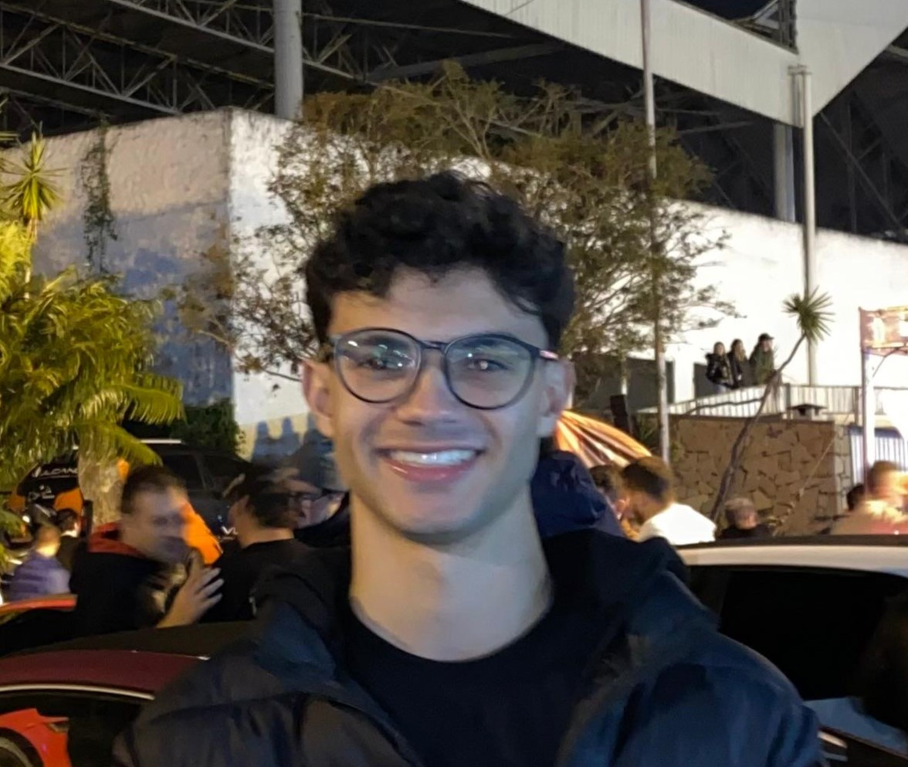
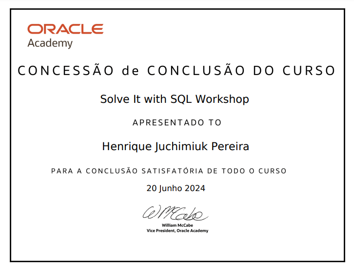
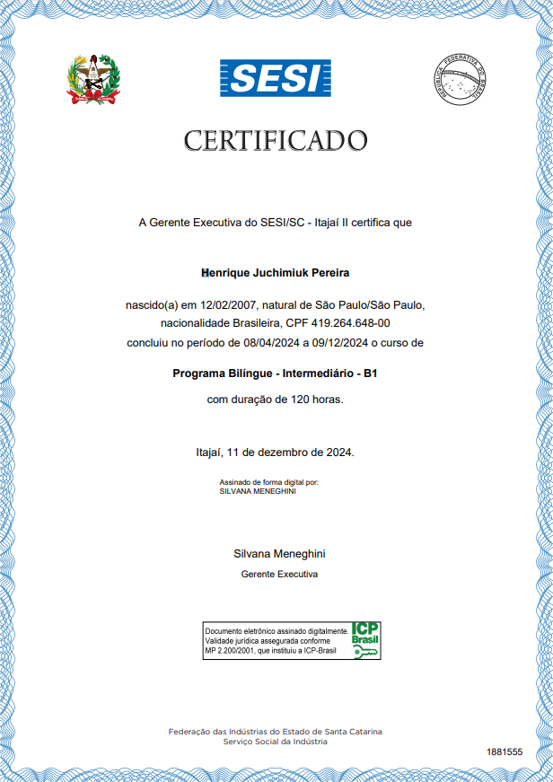

Contato
Entre em contato através das redes sociais.

Sou um desenvolvedor Web focado em Frontend, construindo e gerenciando o Front-end de sites e aplicações Web que levam ao sucesso do produto geral. Confira alguns dos meus trabalhos na seção PROJETOS.
Tenho experiência em tecnologias como HTML, CSS, JavaScript, PHP e SQL. Além disso, estou sempre me buscando atualizar com as últimas tendências de desenvolvimento web.
Estou aberto a oportunidades de trabalho onde possa contribuir, aprender e crescer. Se tiver uma boa oportunidade que corresponda às minhas competências e experiência, não hesite em contactar-me.


Sistema WMS desenvolvido para facilitar a logística de armazéns.
Ver no GitHubSuo formado em Desenvolvimento de Sistemas pelo SENAI, curso técnico com duração de 2 anos. Durante a formação, adquiri sólidos conhecimentos em programação, análise de sistemas e desenvolvimento de soluções tecnológicas. Minha trajetória no SENAI foi marcada pela aplicação prática de tecnologias atuais e pela criação de projetos inovadores que integram teoria e prática no universo do desenvolvimento de software.
Ver MaisConcluí um curso intensivo de Inglês com duração de 2 anos, onde desenvolvi habilidades em leitura, escrita, conversação e compreensão auditiva. Meu nível atual de proficiência é B1, certificado por avaliações padrão. Essa experiência me permite comunicar com confiança em contextos diversos, tanto profissionais quanto pessoais, e continuar evoluindo no aprendizado do idioma.
Ver MaisDurante este curso, aprendi os fundamentos essenciais do SQL, com ênfase no uso da plataforma Oracle. O foco foi em aprender a criar e consultar bancos de dados, utilizando comandos básicos como SELECT, INSERT, UPDATE e DELETE. Também explorei a estrutura de tabelas e como realizar consultas simples para manipular e recuperar dados. Essa base inicial me proporcionou uma compreensão sólida de SQL, essencial para dar os próximos passos no aprofundamento de técnicas mais avançadas.
Ver MaisEntre em contato através das redes sociais.